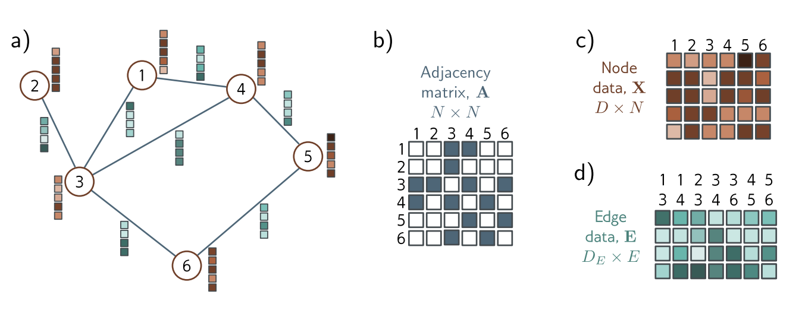
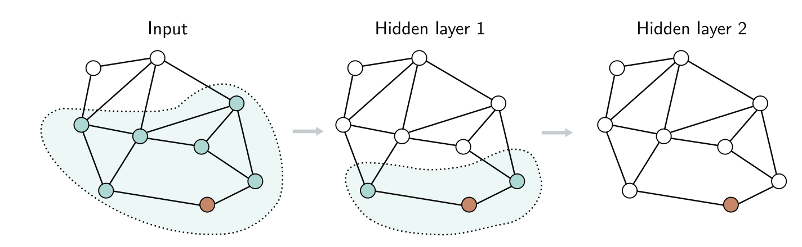
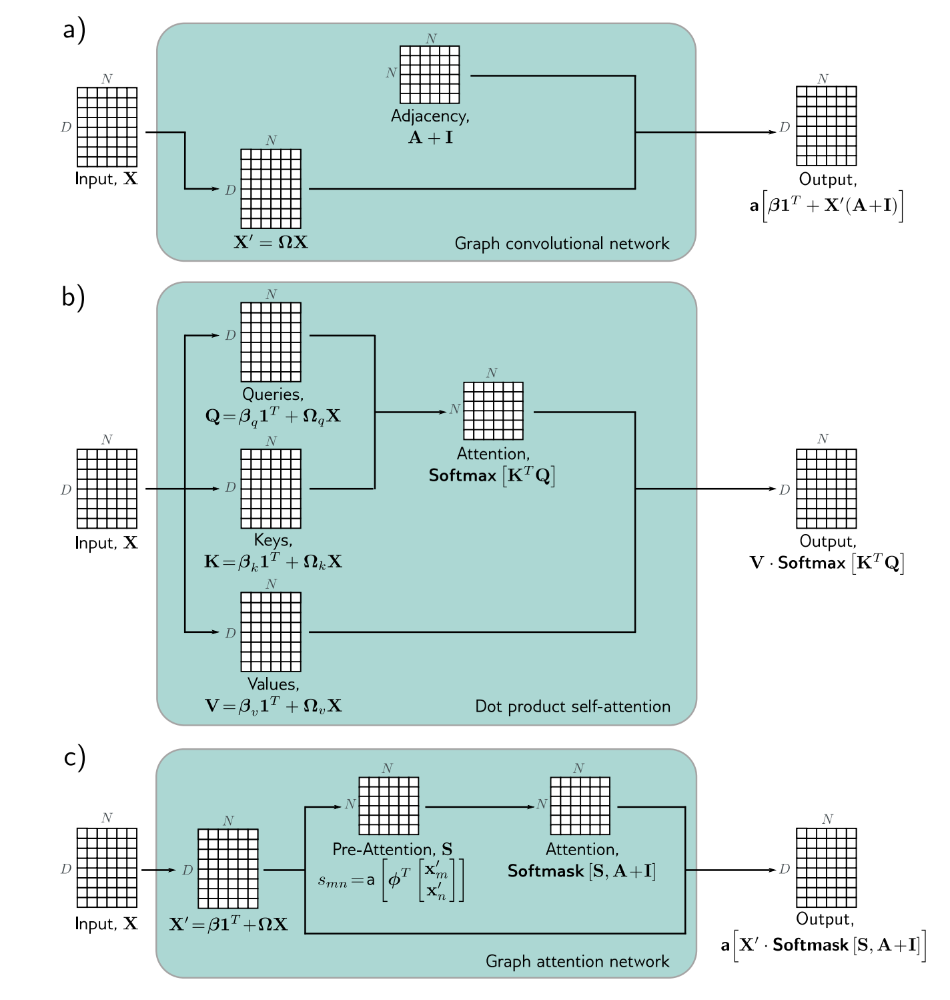
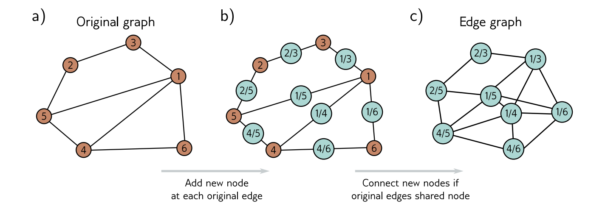
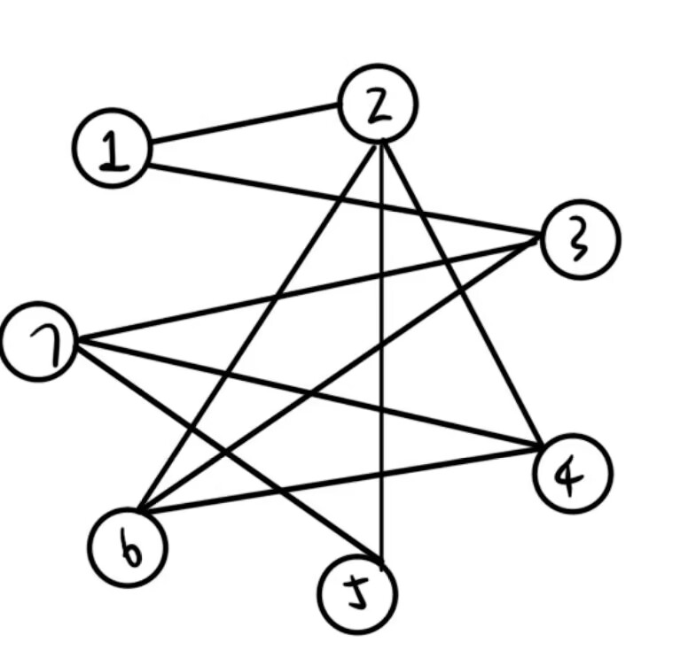
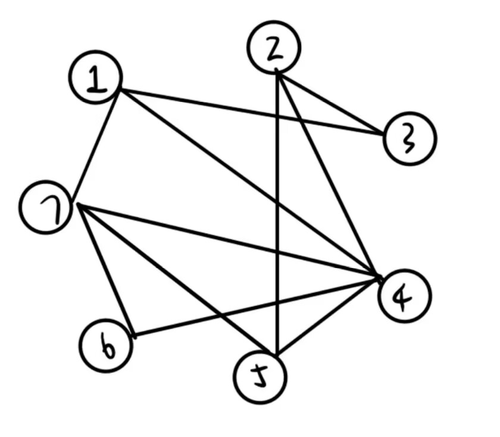
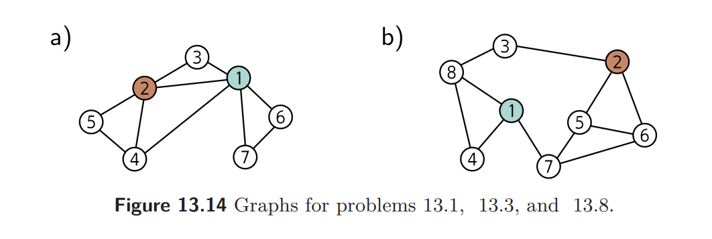
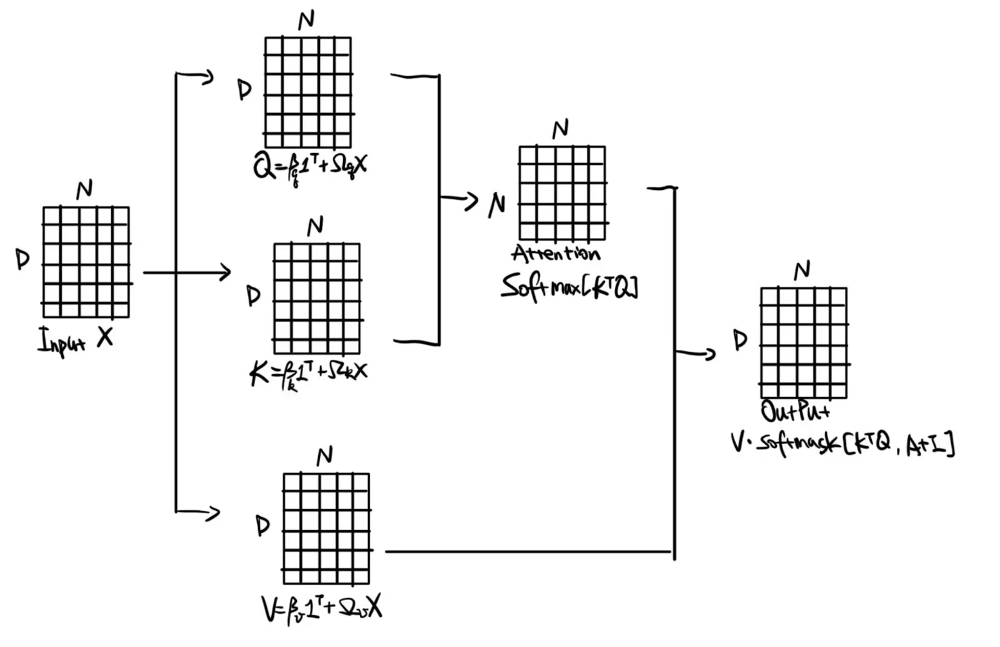
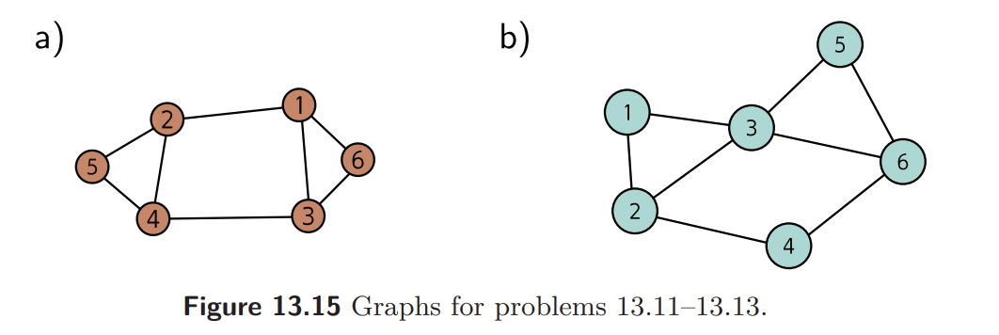
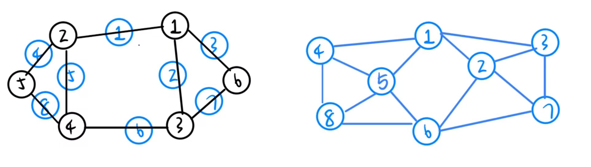

C13.Graph Neural Network
1.Graph Representation
使用邻接表表示节点之间是否连接, 存在节点上的信息称为node embedding, 存在边上的信息称为edge embedding, 这两个embedding也分别使用矩阵表示, 所以一共需要3个矩阵: $\bold A, \bold X, \bold E$.

其中, $\bold A$的大小为$N \times N$, $\bold X$的大小为$D \times N$, $\bold E$的大小为$D_E \times E$
1.1.邻接矩阵的特性
$\bold A ^L$ 可以表示两点间长度为L路径的数量, 当然, 这里的路径指walks而不是path.(walks可能重复经过一个节点, path不能)
proof omitted
1.2.节点下标的置换
不同于文本和图片, 表示图节点的下标是可以置换的, 置换后图的结构不变.
置换可以通过如下表示:
这里的$\bold P$是列置换矩阵.
2.GNN model
一个graph neural network就是要使用邻接矩阵$A$和node embedding $X$, 经过$K$层后, 输出新的embedding $H_K$.
直观来看, 这和transformer network很像, 开始时只有每个单词的初始embedding, 输出时综合了文段的信息, 得到了每个单词的意义. GNN需要综合图$A$的信息
Rmk 设计出的GNN应该有Invariance和Equivariance, 即保持映射不变, 对节点进行置换后映射结果不变.
2.1.常见任务&损失函数
2.1.1.Graph-level tasks
通过利用整个图的信息得出如熔点、沸点、毒性等信息.
一般的方法是将输出embedding $H_K$ 对每行取均值, 得到一个D×1的列向量(相当于pooling), 再通过线性变换得到想要的目标维度.
e.g. 一个二分类任务的输出概率可以表示为:
其中$\beta_K$是标量, $\omega_K$是$1\times D$的权值, $\bold 1$是全为$1$的列向量, $/N$是广播运算.
2.1.2.Node-level tasks
对图上的每个节点都做预测, 比如判断该节点位于图的部位.
直接对每个节点的输出embedding $\bold h_K^{(n)}$做线性变换.
e.g. 一个二分类任务每个节点的输出概率可以表示为:
2.1.3.Edge prediction tasks
判断图上两个未连接的节点是否存在连接, 比如在社交网络中判断两人是否认识
直接输出两个节点的输出embedding的点积.
e.g. 预测两节点的边存在的可能性可以表示为:
2.2.GCN
GNN有很多种, graph convolutional network是其中一种.
CNN复习 按照CNN的思路: 我们强迫网络以相同的kernel参数处理图像的每个部分, 极大的减少了参数的个数, 也利用了位置信息.
Problem 如何设计GCN的计算思路.
Solution1 如果对图上的每个节点都设置不同的参数, 参数的个数会很多, 且训练需要相同结构的图, 非常不convolition
Solution2 综合考虑下设计出如下结构:
上面, $n,m$ 是节点编号, k是神经网络的层数, agg对节点的全部邻居的embedding进行了加和(aggregation).
上式, 对embedding做了相同的线性变换, 再经过激活函数, 得到下一层的embedding.
Solution2的矩阵表示 可以通过矩阵表示得到整一层的输出embedding:
2.3.Example1: graph classification(inductive)
对药物进行有毒或无毒的二分类预测(? 毒性不是要看剂量吗), 输入分子的邻接矩阵$\bold A \in \R^{N\times N}$, 以及每个节点嵌入$\bold X \in \R^{118\times N}$每一列做one-hot编码, 表示原子的种类. 第一层的权值$\boldsymbol \Omega_0 \in \R^{D \times 118}$的$D$可以是任意的, 得到的网络如下:
batch优化 batch可以让输入数据变成3D tensor在GPU上加快计算, 而分子的原子个数不同, 不能按原来的batch方法直接把输入数据并排变成3D tensor. 通过如下方法解决该问题: 把多个输入分子当成一个不连通的大图, 还需要调整输出(对图的每个分子进行预测), 这样的batch方法得到输入数据的不是3D tensor, 而是一个大号的2D tensor.
2.4.Example2: node classification(transductive)
transductive VS inductive transductive model是指一种半监督模型, 不同于inductive我们拥有很多图和对应的标签, 预测某一个图的标签, transductive只拥有一个很大的图和一些节点的标签, 预测未标记节点的标签.
网络结构 本节神经网络结构和上节相同, 但本节的图很大, 而且最后一层的输出是每个节点的多分类概率:
其中, sigmoid函数对矩阵的每一列做归一化, 即每一列代表一个节点的分布.
面对这样的很大且节点标记不全的图, 怎么监督和训练是额外的问题.
2.4.1.batch选择
通过合适的batch选择方式得到batch并缩小输入图的大小:
receptive field 随机选择一个已标记节点作为一个数据, 将receptive field范围内的图作为输入图. 随机选择多个已标记节点作为一个batch.
receptive field相当于CNN中的感受野, 每一层aggregation都拓宽了最后一层某节点能感受到的第一层的节点范围.

Graph partitioning 通过合适的算法去掉较少的边, 把图分成多个连通子图, 这些子图可以组合成batch.
3.GCN layer
GCN的具体实现过程中对aggregation的方式进行了调整.
3.1.aggregation的本节点权值
原来的结构是这样的:
可以对 $\bold I$ 的权值做一点放缩, 即:
或者直接对当前节点部分额外做一个线性变换:
上式和residual有点相似.
3.2.aggregation by residual
直接合并输入embedding:
3.3.aggregation的邻居权值
在某些时候, 结构性的信息没有那么重要, 而本节点的信息更重要, 所以对邻居的embedding做一个额外的均值:
其中, $\bold D=\mathtt{diag}(n_1, n_2,...,n_N)$, 是节点的邻居数量
3.4.kipf normalization(omitted)
3.5.Max pooling aggregation(omitted)
3.6.aggregation by attention
仿照transformer的方法:
先做一个线性变换:
再计算sa矩阵:
其中, $\phi$是需要学习的权值, 上式对节点间的embedding做加权求和再激活.
最后将sa使用在所有节点上:
上式中符号$\mathtt{Softmask}[\bold., \bold A+\bold I]$的意思是对$\bold S$的每一列进行softmax后, 屏蔽不相邻的节点, 即不使用全局的attention, 而只是使用该节点与相邻节点的attention.

4.Edge graphs
对于边上的数据, 可以将一个节点图转化成“边图”, 即将边变成节点, 将边的共同节点变成边.

将edge graph转化成original graph还得需要识别完全子图, 将一个最大完全子图的所有边转化成一个节点.??似乎结果不唯一, 见problem13.11
§Problems
Problem13.2
Draw graphs that correspond to the following adjacency matrices:
Solution 上述矩阵均为对称阵, 得到的graph为无向图.
A1:

A2:

Problem13.3
Consider the two graphs in figure 13.14. How many ways are there to walk from node one to node two in (i) three steps and (ii) seven steps?

Solution for graph, convert it to matrix form, and power it:
通过计算$\bold A_1^2, \bold A_1^7$可得图a中1到2点路径数量分别为:9, 879
通过计算$\bold A_2^2, \bold A_2^7$可得图a中1到2点路径数量分别为:3, 203
Problem13.7
Consider the simple GNN layer:
where $\bold H$ is a $D × N$ matrix containing the $N$ node embeddings in its columns, $\bold A$ is the $N × N$ adjacency matrix, $\bold β$ is the bias vector, and $\boldsymbol Ω$ is the weight matrix. Show that this layer is equivariant to permutations of the node order so that:
where $\bold P$ is an $N × N$ permutation matrix.
proof
$\blacksquare$
Problem13.10
Devise a graph attention mechanism based on dot-product self-attention and draw its mechanism in the style of figure 13.12.
Solution

Problem13.11
Draw the edge graph associated with the graph in figure 13.15a.

Solution

Problem13.14
Design a layer that updates a node embedding $\bold h_n$ based on its neighboring node embeddings $\{\bold h_m\}_{m∈ne[n]}$ and neighboring edge embeddings $\{\bold e_m\}_{m∈nee[n]}$ . You should consider the possibility that the edge embeddings are not the same size as the node embeddings.
Solution
其中, $\bold E\in\R^{D_E\times E}$是边embedding, $\bold B\in\R^{E\times N}$存储了节点与边相邻的情况, $\bold \Phi_k \in \R^{D \times D_E}$对相邻边embedding加和后做一个线性变化, 将维度调整到合适的$D$, 与节点embedding相同.